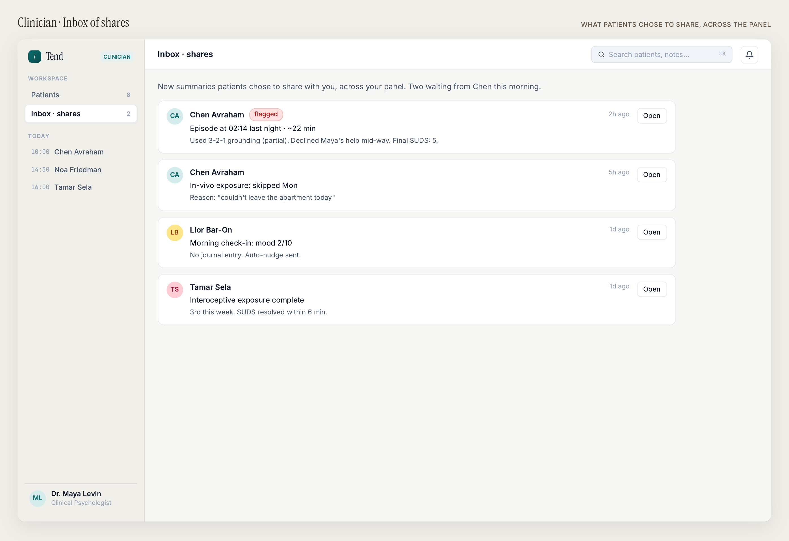

The 99% of life
that happens between visits.
Tend is the infrastructure for the half of care that's currently invisible, unsupported, and unmeasured — clinician-prescribed, patient-owned, pull-first.
We build the infrastructure for the
between-visit half of care.
The clinician writes the plan and shapes the channel. The channel speaks in their voice. The patient's data stays under the patient's control. Inside that frame, Tend helps the patient execute, decides what to escalate, and feeds the right signal back to the clinician — without adding work for the clinician.

A co-therapist in the patient's pocket.
Not a chatbot.
Maya knows only what the clinician shared. She walks the patient through prescribed activities, answers scope-appropriate questions, and de-escalates distress without overstepping.
- Clinician-tuned tone. With consent, voice and persona modeled on the clinician themselves.
- Continuity-as-treatment. The therapeutic alliance staying present in the gap is itself part of the mechanism (Orlinsky/Geller intersession process).
- Pull-first home screen. Today shows pending shares + plan items — never a "how are you?" ping.
- Cross-specialty: "What works at this restaurant?" / "I forgot my morning dose — take now or skip?"
Conversations live on-device.
Only what the patient approves leaves.
A separate, narrower-scoped local service extracts shareable summaries and signals. The patient sees, edits, and explicitly approves before anything syncs to the clinician portal. Every share is reversible until the next session.


Did the prescribed thing
happen — and how?
Objective where possible. Self-reported where not. Two outputs: the patient's progress view and the clinician's adherence signal.
- Patient-facing. Plan view of prescribed practices; tracking view that shows the rhythm — "mornings landed, evenings drifted."
- Clinician-facing. A 14-day adherence number, per-practice rhythm, and the patient's own framing of why a slip happened.
- Engagement, not gamification. No streaks, no badges, no clinical theater. Patients are not the user we optimize against.
- Cross-specialty: integrate with smart pill bottles / HMO refill data / Apple Health where the signal can be pulled, not asked.

Readable in under a minute.
Actionable in another.
A pre-session brief for a busy clinician — not a new inbox. Per-patient: adherence, current prescription, themes the patient surfaced, escalation events.
- At-a-glance: 64% adherence, within plan. Sleep at 4.2h flagged. Two episodes shared in the last 7 days.
- Pre-session note draft. Chen completed 2 of 4 imaginal exposures, declined Maya mid-way on one — flagged as a deliberate choice consistent with his preference.
- The surface that makes the platform prescribable. If using the dashboard costs more time than it saves, Tend fails — regardless of how the patient side works.
We operationalize the primitive
your clinician already knows
drives outcomes.